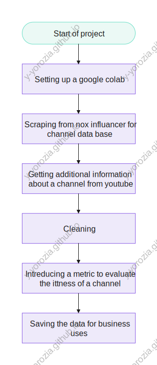
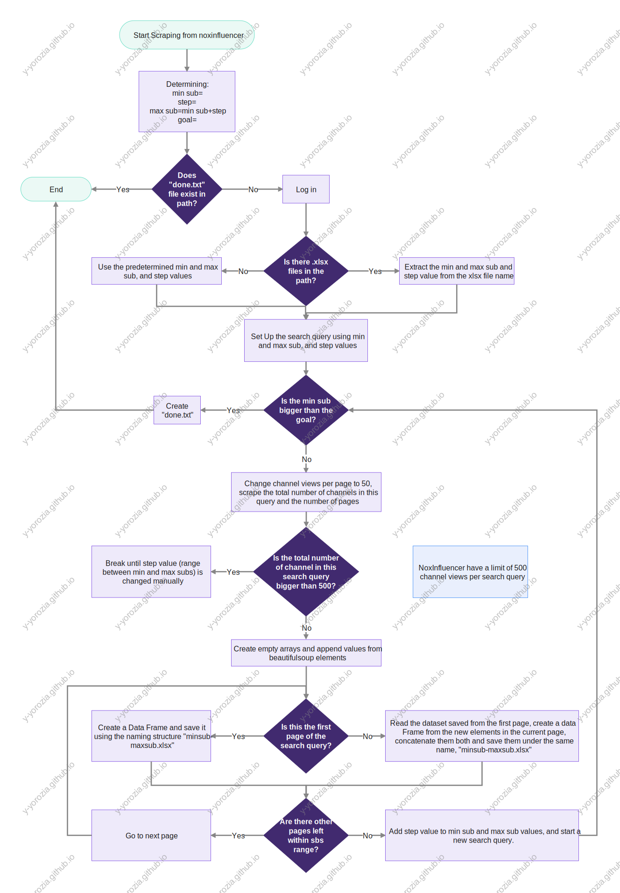

Scraping from NoxInfluencer and adding additional filters
Table of Contents
The goal is to add additional filters that aren't in Non Influencer to perform tasks that were deemed to only be done manually.
- These filters are:
- Number of videos a channel have uploaded
- average video length
- average video views
- narration in videos
- no content for kids
- Additionally, capturing email address from about page/description
- Number of videos a channel have uploaded
- Scoring system:
A channel is favorable if it has higher views, video length, talking/narration, video count, and fewer subs. Because the fewer subs a channel have, the less likely it was discovered by any influencer marketing agency.
If a channel is not worth, meaning have content for kids, music, animation, or a channel with no narration that immediately disqualify it.
See Scraping from YouTube section for more details on variables
\[score=\frac{\log{_\text{video count}}* \log{\bar{x}_\text{views}}*\log{\bar{x}_\text{lengh}}*\log{_\text{narration score}}}{\log{_\text{subs}}} * P(\text{worth}) * P(\text{narration})\]
This is the entire data sets generated Link
And this is the final/important data set Link
1. Workflow
1.1. summary

1.2. Nox influancer scrape

2. OS Setup
Installing selenuim in google colab post Ubuntu update.
%%shell # Ubuntu no longer distributes chromium-browser outside of snap # # Proposed solution: https://askubuntu.com/questions/1204571/how-to-install-chromium-without-snap # Add debian buster cat > /etc/apt/sources.list.d/debian.list <<'EOF' deb [arch=amd64 signed-by=/usr/share/keyrings/debian-buster.gpg] http://deb.debian.org/debian buster main deb [arch=amd64 signed-by=/usr/share/keyrings/debian-buster-updates.gpg] http://deb.debian.org/debian buster-updates main deb [arch=amd64 signed-by=/usr/share/keyrings/debian-security-buster.gpg] http://deb.debian.org/debian-security buster/updates main EOF # Add keys apt-key adv --keyserver keyserver.ubuntu.com --recv-keys DCC9EFBF77E11517 apt-key adv --keyserver keyserver.ubuntu.com --recv-keys 648ACFD622F3D138 apt-key adv --keyserver keyserver.ubuntu.com --recv-keys 112695A0E562B32A apt-key export 77E11517 | gpg --dearmour -o /usr/share/keyrings/debian-buster.gpg apt-key export 22F3D138 | gpg --dearmour -o /usr/share/keyrings/debian-buster-updates.gpg apt-key export E562B32A | gpg --dearmour -o /usr/share/keyrings/debian-security-buster.gpg # Prefer debian repo for chromium* packages only # Note the double-blank lines between entries cat > /etc/apt/preferences.d/chromium.pref << 'EOF' Package: * Pin: release a=eoan Pin-Priority: 500 Package: * Pin: origin "deb.debian.org" Pin-Priority: 300 Package: chromium* Pin: origin "deb.debian.org" Pin-Priority: 700 EOF
!apt-get update !apt-get install chromium chromium-driver !pip3 install selenium !pip install pytube
3. Imports and setup
from bs4 import BeautifulSoup import time import numpy as np import pandas as pd from tqdm.notebook import trange, tqdm, tqdm_notebook import os import glob from selenium import webdriver from selenium.webdriver.chrome.options import Options from selenium.webdriver.common.keys import Keys from selenium.webdriver.common.by import By from selenium.webdriver.support import expected_conditions as EC from selenium.webdriver.support.wait import WebDriverWait from pytube import YouTube from pytube import Channel import re
options = Options() options.add_argument("--headless") options.add_argument("--no-sandbox") options.add_argument('--disable-dev-shm-usage') driver = webdriver.Chrome("chromedriver", options=options)
project_name="all in" big_path="/content/drive/MyDrive/Nox/" # project_path=big_path+project_name nox_scrape=project_path+"/1-nox_scrape" yt_scrape=project_path+"/2-yt_scrape" yt_scrape_process=project_path+"/3-yt_scrape_process" work=project_path+"/4-work" # for f in [project_path,nox_scrape,yt_scrape,yt_scrape_process,work]: if os.path.exists(f): pass else: os.mkdir(f)
goal=100000 steps=1000 min_sub=10000 max_sub=min_sub+steps
#increasing the goal and deleting done goal=100000 if os.path.exists(nox_scrape+"/"+'done.txt'): os.remove(nox_scrape+"/"+'done.txt')
4. Scraping from Noxinfluencer
This is the result: Link
I am going to hide the username and the passwords because they are not mine, not they belong to my friend who backstabbed me either, they belong to the employer at the marketing agency.
if os.path.exists(nox_scrape+"/"+'done.txt'): pass else: options = Options() options.add_argument("--headless") options.add_argument("--no-sandbox") options.add_argument('--disable-dev-shm-usage') driver = webdriver.Chrome("chromedriver", options=options) driver.implicitly_wait(10) driver.get("https://www.noxinfluencer.com/login?userType=brand&service=https%3A%2F%2Fwww.noxinfluencer.com%2F") time.sleep(5) username = WebDriverWait(driver, 10).until(EC.element_to_be_clickable((By.CSS_SELECTOR, "input[id='email']"))) password = WebDriverWait(driver, 10).until(EC.element_to_be_clickable((By.CSS_SELECTOR, "input[id='pwd']"))) username.clear() username.send_keys("USERNAME") password.clear() password.send_keys("PASSWORD") button = WebDriverWait(driver, 2).until(EC.element_to_be_clickable((By.CSS_SELECTOR, "span[id='login-submit']"))).click() time.sleep(5) driver.get("https://www.noxinfluencer.com/search/youtube/channel?p=MMf6cWkk1"+str(200000)+"KntTpoAbcWkk1"+str(200300)+"KntTAfaG0cWkk2CA") old_search = WebDriverWait(driver, 30).until(EC.element_to_be_clickable((By.CSS_SELECTOR, ".kol-icon-back"))).click() old_search = WebDriverWait(driver, 30).until(EC.element_to_be_clickable((By.CSS_SELECTOR, ".kol-icon-back"))) current_files_in_scrape=glob.glob(nox_scrape+"/*.xlsx") current_files_in_scrape=sorted(current_files_in_scrape,key=lambda x:int(x.split("/")[-1].split('-')[0])) if len(current_files_in_scrape)>0: min_sub=int(current_files_in_scrape[-1].split("/")[-1].split('-')[0]) max_sub=int(current_files_in_scrape[-1].split("/")[-1].split('-')[-1].split(".")[0]) steps=max_sub-min_sub for sub_count in tqdm_notebook(range(int((goal-min_sub)/steps))): if min_sub>goal: with open(nox_scrape+"/"+'done.txt', 'w') as fp: pass else: search_url="https://www.noxinfluencer.com/youtube/search?isvideo=0&searchMode=name&country=UK%2CUS%2CAU%2CCA&language=en&followerIndex=-1&followerGte="+str(min_sub)+"&followerLte="+str(max_sub)+"&publishIndex=3&publishTime=7689600000&lastActiveTime=1647126000000&estExposureIndex=-1&estExposureGte=10000&sortField=noxStarLevel" driver.get(search_url) pagesize_select = WebDriverWait(driver, 10).until(EC.element_to_be_clickable((By.CSS_SELECTOR, "span[id='select2-pagination-pagesize-select-container']"))).click() page_50=BeautifulSoup(driver.page_source, 'lxml').find("ul",{"id":"select2-pagination-pagesize-select-results"}).findAll("li")[-1]["id"] pagesize_select_50 = WebDriverWait(driver, 10).until(EC.element_to_be_clickable((By.CSS_SELECTOR, "li[id="+page_50+"]"))).click() time.sleep(np.random.randint(2,3)) page_source = driver.page_source soup = BeautifulSoup(page_source, 'lxml') total_result=int(soup.find("span",class_="result-total").text) item_per_page=len(soup.findAll("div",class_="result-item-wrap")) if total_result <=50: total_pages=1 else: total_pages=int(np.ceil(total_result/item_per_page)) active_page=soup.find("span",class_="page-item active").text starting_page=0 if total_result > 500: print("total result is big") break elif total_result <40: steps=steps*2 for page in tqdm_notebook(range(total_pages-starting_page)): page_source = driver.page_source soup = BeautifulSoup(page_source, 'lxml') item_per_page=len(soup.findAll("div",class_="result-item-wrap")) active_page=soup.find("span",class_="page-item active").text #print(active_page+" out of "+str(total_pages)) name=np.empty(item_per_page, dtype=object) url=np.empty(item_per_page, dtype=object) keywords=np.empty(item_per_page, dtype=object) subs=np.empty(item_per_page, dtype=object) views=np.empty(item_per_page, dtype=object) videos=np.empty(item_per_page, dtype=object) views_to_subs=np.empty(item_per_page, dtype=object) engagement_rate=np.empty(item_per_page, dtype=object) est_views=np.empty(item_per_page, dtype=object) est_sponsorship_price=np.empty(item_per_page, dtype=object) for item in range(item_per_page): try: name[item]=soup.findAll("div",class_="result-item-wrap")[item].find("a",class_="channel-name ellipsis").text.strip() except: pass try: url[item]=soup.findAll("div",class_="result-item-wrap")[item].find("a",class_="channel-name ellipsis")["href"].replace("/youtube","https://www.youtube.com") except: pass try: keywords[item]=soup.findAll("div",class_="result-item-wrap")[item].find("div",class_="tag-container").text.strip() except: pass try: subs[item]=soup.findAll("div",class_="result-item-wrap")[item].findAll("span",class_="base-number")[0].text except: pass try: views[item]=soup.findAll("div",class_="result-item-wrap")[item].findAll("span",class_="base-number")[1].text except: pass try: videos[item]=soup.findAll("div",class_="result-item-wrap")[item].findAll("span",class_="base-number")[2].text except: pass try: views_to_subs[item]=soup.findAll("div",class_="item-data pull-left")[item].findAll("div",class_="data-contain clearfix")[0].find("span",class_="data-number").text except: pass try: engagement_rate[item]=soup.findAll("div",class_="item-data pull-left")[item].findAll("div",class_="data-contain clearfix")[1].find("span",class_="data-number").text except: pass try: est_views[item]=soup.findAll("div",class_="item-data pull-left")[item].findAll("div",class_="data-contain clearfix")[2].find("span",class_="data-number").text except: pass try: est_sponsorship_price[item]=soup.findAll("div",class_="item-data pull-left")[item].findAll("div",class_="data-contain clearfix")[3].find("span",class_="data-number").text except: pass if page==0: pd.DataFrame(data={"name":name,"url":url,"subs":subs,"keywords":keywords,"views":views,"videos":videos, "views_to_subs":views_to_subs,"engagement_rate":engagement_rate,"est_views":est_views, "est_sponsorship_price":est_sponsorship_price}).to_excel(nox_scrape+"/"+str(min_sub)+"-"+str(max_sub)+".xlsx",index=False) else: df=pd.read_excel(nox_scrape+"/"+str(min_sub)+"-"+str(max_sub)+".xlsx") ndf=pd.DataFrame(data={"name":name,"url":url,"subs":subs,"keywords":keywords,"views":views,"videos":videos, "views_to_subs":views_to_subs,"engagement_rate":engagement_rate,"est_views":est_views, "est_sponsorship_price":est_sponsorship_price}) pd.concat([df,ndf]).to_excel(nox_scrape+"/"+str(min_sub)+"-"+str(max_sub)+".xlsx",index=False) next_page = WebDriverWait(driver, 30).until(EC.element_to_be_clickable((By.CSS_SELECTOR, "span[id='page-after']"))).click() time.sleep(np.random.randint(1,2)) min_sub=max_sub max_sub=min_sub+steps
5. Scraping from YouTube
This is the result: Link
The goal is to add additional filters to the dataset sraper from NoxInfluencer
Disclaimer: Google did an update, the library "pytube" doesn't return the last 20 videos of a given channel anymore with this function Channel(adf["url"].iloc[r]).
- The manual job that I was trying to automate
Number of videos in the channel is bigger than 15
c = Channel(adf["url"].iloc[r]) number_of_video=len(c.video_urls)
Copy the channel's email if found in description of about page.
# looking in the channel description cemail[r]=re.findall(r"[a-z0-9\.\-+_]+@[a-z0-9\.\-+_]+\.[a-z]+", c_data["metadata"]["channelMetadataRenderer"]["description"].lower()) # looking in the videos description demails[i]= re.findall(r"[a-z0-9\.\-+_]+@[a-z0-9\.\-+_]+\.[a-z]+", ytd)
The mean and median of video's length and views to be filtered later on by: three minute or more for video length and 10k or more for video views.
# nv is the number of videos sample, nv=20 views=[np.nan]*nv lenght=[np.nan]*nv for i in range(nv): yt=YouTube(c.video_urls[i]) views[i]=yt.views lenght[i]=yt.lenght np.mean(views) np.median(views) np.mean(lenght) np.median(lenght)
Filter out content for kids, music, and animations.
I made a list of words that only appears in undesirable content. I get the video description and see if any of those words are in there, I do it for every 20 video.
Depending on how often a channel have that word give an idea on whether the channel if fully dedicated to this undesirable content.
not_worth_keywords_in_discription_keyword=["short film","hip hop"," asmr ", "amv " ,"fortnite","minecraft","roblox"," animated "] channel_woth_it=[True]*nv discription_word_alert=[] for i in range(nv): yt=YouTube(c.video_urls[i]) for w in not_worth_keywords_in_discription_keyword: if w in yt.description.lower(): channel_woth_it[s]=False discription_word_alert.append(w)
Content have narration.
Now, this is something that I was proud to figure it out.
How could someone tell if a video have a narration or not, I was thinking of downloading the audio of the YouTube videos and analyzing it, but YouTube have a quota limit of 100.
It tokes me a while to figure out a way.
What I did is that I checked, with the help of "pytube" library, for each video auto generated subtitles.
If the video doesn't have it, well, the video is most likely music.
Event if it did have subtitles, how long are they in comparison to the whole video length, since there are channels that talk in the first 20 second and just play footage.
len_sub=[np.nan]*nv sub_exist=[False]*nv narrative_scores=[np.nan]*nv for i in range(nv): yt=YouTube(c.video_urls[i]) try: len_sub[i]=len(yt.captions["a.en"].xml_captions) sub_exist[i]=True narrative_scores[i]=len_sub[i]/lenght[i] except: pass
Below is the full code
current_files_in_scrape=glob.glob(nox_scrape+"/*.xlsx") current_files_in_scrape=sorted(current_files_in_scrape,key=lambda x:int(x.split("/")[-1].split('-')[0])) not_worth_keywords_in_discription_keyword=["short film","hip hop"," asmr ", "amv " ,"fortnite","minecraft","roblox"," animated "] for excel in tqdm_notebook(current_files_in_scrape): if os.path.exists(excel.replace(nox_scrape,yt_scrape)): pass else: adf=pd.read_excel(excel) cemail=[np.nan]*len(adf) keywords=[np.nan]*len(adf) aviews=[np.nan]*len(adf) alenght=[np.nan]*len(adf) adescription=[np.nan]*len(adf) akeywords=[np.nan]*len(adf) ademails=[np.nan]*len(adf) alen_sub=[np.nan]*len(adf) for r in range(len(adf)): #dfcid=adf["url"].iloc[chi].split("/")[-1] c = Channel(adf["url"].iloc[r]) number_of_video=len(c.video_urls) if number_of_video <=20: nv=number_of_video else: nv=20 #channel arrays if number_of_video==0: pass else: c_data=c.initial_data try: cemail[r]=re.findall(r"[a-z0-9\.\-+_]+@[a-z0-9\.\-+_]+\.[a-z]+", c_data["metadata"]["channelMetadataRenderer"]["description"].lower()) except: pass #video arrays views=[np.nan]*nv lenght=[np.nan]*nv channel_woth_it=[True]*nv discription_word_alert=[] demails=[np.nan]*nv len_sub=[np.nan]*nv sub_exist=[False]*nv narrative_scores=[np.nan]*nv s=0 for i in range(nv): #time.sleep(np.random.randint(1,3)) #youtube yt=YouTube(c.video_urls[i]) # yti=yt.initial_data views[i]=yt.views lenght[i]=round(yt.length/60,2) for w in not_worth_keywords_in_discription_keyword: if w in yt.description.lower(): channel_woth_it[s]=False discription_word_alert.append(w) s+=1 demails[i]= re.findall(r"[a-z0-9\.\-+_]+@[a-z0-9\.\-+_]+\.[a-z]+", yt.description.lower()) try: len_sub[i]=len(yt.captions["a.en"].xml_captions) sub_exist[i]=True narrative_scores[i]=len_sub[i]/lenght[i] except: pass adf["email"]=cemail adf["demail"]=demails adf["mean_views"]=np.mean(views) adf["median_views"]=np.median(views) adf["mean_lenght"]=np.mean(lenght) adf["median_lenght"]=np.median(lenght) adf["worth_prob"]=np.mean(channel_woth_it) adf["discription_word_alert"]=discription_word_alert adf["narrative_prob"]=np.mean(sub_exist) adf["narative_score"]=np.mean(narrative_scores) adf.to_excel(excel.replace(nox_scrape,yt_scrape),index=False)
6. Cleaning the data
This is the result: Link
In this section, I have added a score metric to assess a channel potential to be a good fit for the sponsorship and not being approached already by another influencer marketing agency.
A channel is favorable if it has higher views, video length, talking/narration, video count, and fewer subs. Because the fewer subs a channel have, the less likely it was discovered by any influencer marketing agency.
If a channel is not worth, meaning have content for kids, music, animation, or a channel with no narration that immediately disqualify it.
\[score=\frac{\log{_\text{video count}}* \log{\bar{x}_\text{views}}*\log{\bar{x}_\text{lengh}}*\log{_\text{narration score}}}{\log{_\text{subs}}} * P(\text{worth}) * P(\text{narration})\]
# db=pd.read_excel("db.xlsx") z=0 for excel in tqdm(glob.glob(yt_scrape+"/*.xlsx")): df=pd.read_excel(excel) df=df.dropna(subset='mean_views').reset_index(drop=True) subs=[] for i in range(len(df)): if "K" in df["subs"].iloc[i]: subs.append(int(float(df["subs"].iloc[i].replace("K",""))*1000)) elif "M" in df["subs"].iloc[i]: subs.append(int(float(df["subs"].iloc[i].replace("M",""))*1000*1000)) elif "B" in df["subs"].iloc[i]: subs.append(int(float(df["subs"].iloc[i].replace("B",""))*1000*1000*1000)) elif '--' in df["subs"].iloc[i]: subs.append(int(excel.split("-")[-1].split(".")[0])) #elif '' in df["subs"].iloc[i]: #subs.append(np.nan) else: subs.append(int(float(df["subs"].iloc[i]))) df["subs"]=subs views=[] for i in range(len(df)): if "K" in df["views"].iloc[i]: views.append(int(float(df["views"].iloc[i].replace("K",""))*1000)) elif "M" in df["views"].iloc[i]: views.append(int(float(df["views"].iloc[i].replace("M",""))*1000*1000)) elif "B" in df["views"].iloc[i]: views.append(int(float(df["views"].iloc[i].replace("B",""))*1000*1000*1000)) elif '--' in df["views"].iloc[i]: views.append(np.nan) elif '' in df["views"].iloc[i]: views.append(np.nan) else: views.append(int(float(df["views"].iloc[i]))) df["views"]=views views_to_subs=[] for i in range(len(df["views_to_subs"])): if type(df["views_to_subs"].iloc[i])==float: views_to_subs.append(np.nan) else: views_to_subs.append(round(float(df["views_to_subs"].iloc[i].replace("%",""))/100,2)) df["views_to_subs"]=views_to_subs engagement_rate=[] for i in range(len(df["engagement_rate"])): if type(df["engagement_rate"].iloc[i])==float: engagement_rate.append(np.nan) else: engagement_rate.append(round(float(df["engagement_rate"].iloc[i].replace("%",""))/100,2)) df["engagement_rate"]=engagement_rate est_views=[] for i in range(len(df)): if "K" in df["est_views"].iloc[i]: est_views.append(int(float(df["est_views"].iloc[i].replace("K",""))*1000)) elif "M" in df["est_views"].iloc[i]: est_views.append(int(float(df["est_views"].iloc[i].replace("M",""))*1000*1000)) elif "B" in df["est_views"].iloc[i]: est_views.append(int(float(df["est_views"].iloc[i].replace("B",""))*1000*1000*1000)) elif '--' in df["est_views"].iloc[i]: est_views.append(np.nan) #elif '' in df["est_views"].iloc[i]: #est_views.append(np.nan) else: est_views.append(int(float(df["est_views"].iloc[i]))) df["est_views"]=est_views df['est_sponsorship_price']=df['est_sponsorship_price'].apply(lambda x:x.replace('$ ','')) est_sponsorship_price=[] for i in range(len(df)): if "K" in df["est_sponsorship_price"].iloc[i]: est_sponsorship_price.append(int(float(df["est_sponsorship_price"].iloc[i].replace("K",""))*1000)) elif "M" in df["est_sponsorship_price"].iloc[i]: est_sponsorship_price.append(int(float(df["est_sponsorship_price"].iloc[i].replace("M",""))*1000*1000)) elif "B" in df["est_sponsorship_price"].iloc[i]: est_sponsorship_price.append(int(float(df["est_sponsorship_price"].iloc[i].replace("B",""))*1000*1000*1000)) elif '-' in df["est_sponsorship_price"].iloc[i]: est_sponsorship_price.append(np.nan) #elif '' in df["est_sponsorship_price"].iloc[i]: #est_sponsorship_price.append(np.nan) else: est_sponsorship_price.append(int(float(df["est_sponsorship_price"].iloc[i]))) df["est_sponsorship_price"]=est_sponsorship_price nemail=np.array(df["email"]) for i in range(len(df)): if pd.isna(df["email"].iloc[i]) == True and pd.isna(df["demail"].iloc[i]) == False: nemail[i]= df["demail"].iloc[i].split(",")[0] df["email"]=nemail log_views=np.log(df["median_views"]) log_videos=np.log(df["videos"]) log_lenght=np.log(df["median_lenght"]) log_narative_score=np.log(df["narative_score"]) log_subs=np.log(df["subs"]) df["score"]=round(((log_videos*log_views*log_lenght*log_narative_score)/(log_subs))*df["worth_prob"]*df["narative_prob"],2) df=df.sort_values(by="score",ascending=False).reset_index(drop=True) # is_new=[True]*len(df) # for i in range(len(df)): # df_name=df["name"].iloc[i] # for n in range(len(db)): # if df_name==db["name"].iloc[n]: # is_new[i]=False # df=df[is_new].reset_index(drop=True) df.to_excel(excel.replace(yt_scrape,yt_scrape_process),index=False)
7. Combining the data
This is the result: Link
i=0 for excel in tqdm(glob.glob(yt_scrape_process+"/*.xlsx")): if i ==0: df=pd.read_excel(excel) i+=1 else: df=pd.concat([df,pd.read_excel(excel)]) df=df[df["score"]!=np.inf] df=df.sort_values(by="score",ascending=False).reset_index(drop=True) df=df.drop_duplicates(subset ="url",keep = "first").reset_index(drop=True) df.to_excel(work+"/10000-100000.xlsx",index=False)